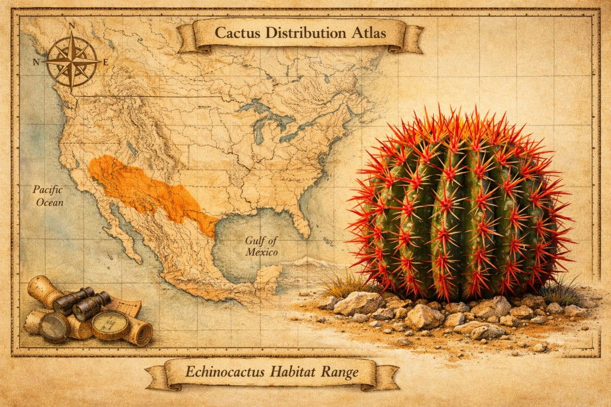

Навигатор по кактусам
Введите название кактуса или суккулента в поле выше — откроются ссылки на разделы: уход, ареал, систематика, можно спросить ИИ.

Быстрые результаты по сайту
Если не нашли с первого раза, можно быстро проверить весь сайт:
Искать по сайту- Здоровье кактусаУход для этого вида
- Места обитанияАреал на карте
- Происхождение видовСистематика, названия
- Опознать кактусОпределить по фото
- Спросить ИИКолючий Собеседник ответит на вопрос
Введите запрос в поле поиска в шапке и нажмите «Найти».